Where could i begun..?i started my college journey, through my struggles and met most of the matured people since i were a new student,
learn something new than the previous times i couldn't make friends since senior high and during pandemic after graduated from my senior high before pandemic started. I was glad this campus isnt like no other than having bullies and rude people in my time.
Now im in 2nd year, 2nd semester through life struggles and learn to become an IT professional,
it's the only course i can finish for 2 years away, and getting a job to help my family from financial problems and while keep doodling as an artist animator.
Through to this day, i have one friend who has a same interest of games he and i played,drawing art in diffent artstyle, and other games on roblox he yapping about that made me interested more. his name is christian Albiso, in nickname i preferred to calling him "carl" like he's more of like a sibling to me but serious and funny sometime, the only problem was his temper but i respected him and giving him some space to calm himself down over time. some of students pair us as couple but i disagree to this statement because carl is 5 years younger at my age, i treated him kindly and respected how i treat brother, he does the same as well.
Some exams can be stressful yet i passed as i learned mistakes and failed scores, my determination and hopes that i pray to lord i will pass through this course. some major exams and recitation included group thesis, and other minor subjects were decently difficult yet i passed through semester, learning my mistakes and how i acted off and immaturily.i somehow felt being judged by one of the past classmates that i loosen my chance to have friends again, but except for carl and other classmates, who we dont talk much.
There are times I enjoyed the event are free to join that required to gain grade scores, the events were bit pricy unlike Sport fest and SIT week i find enjoyable during the events that i won 2nd place of poster making and quitted joining web designing due to my hunger couldn't last long enough but to eat my lunch...
After doing Homeworks, actitivies, groupings , and house chores, i usually drawing a lot and learn more tips an tricks to learn from the art tutorials on youtube by one of the amazing artists and adoring and awe of thier art styles, espcially on content indie creators who are IT and know how to make a webpage of thier own style tht i would make one of my own to recieve clients when i'm opening an art commission as a side job,this helps for me to post most of all my artworks on the webpage and upcoming comics tht i been working on, during my free time. and i appreciated myself my work and people adored and liked, supported my content, i made mutual friends who are in the same fandom, and sometimes i playing games through online nor offline
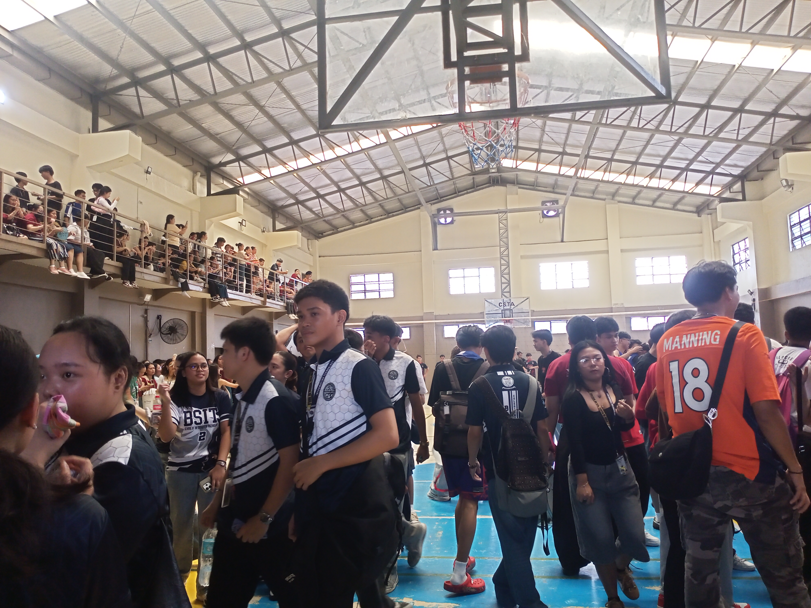
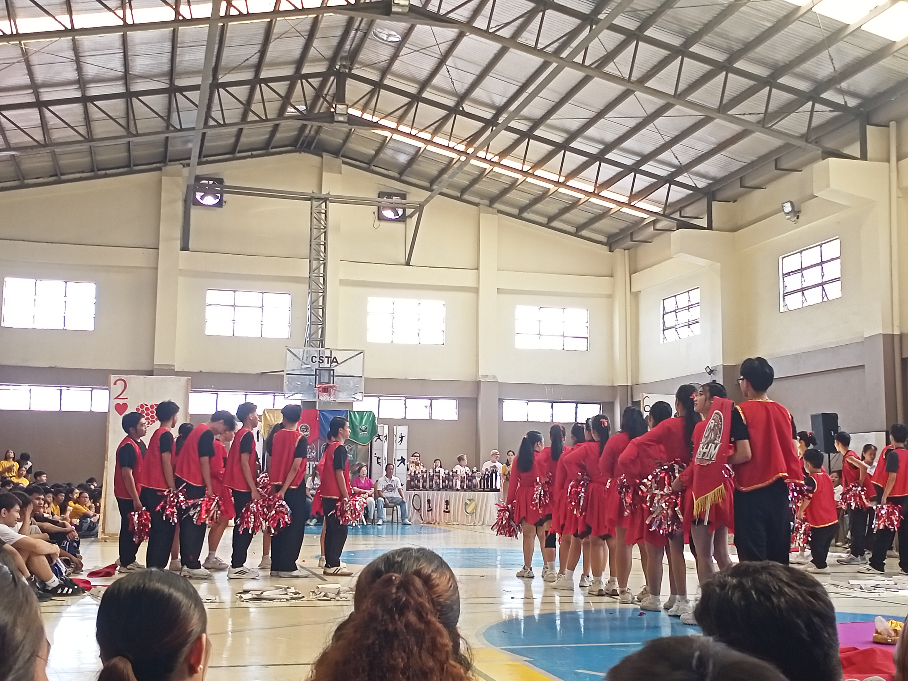
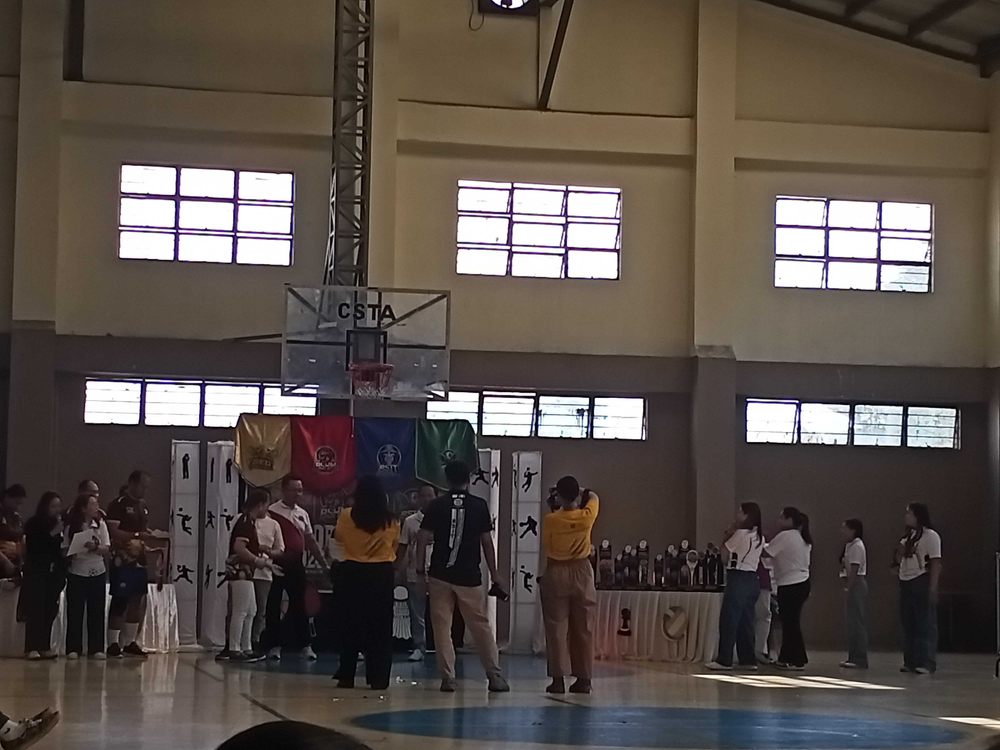
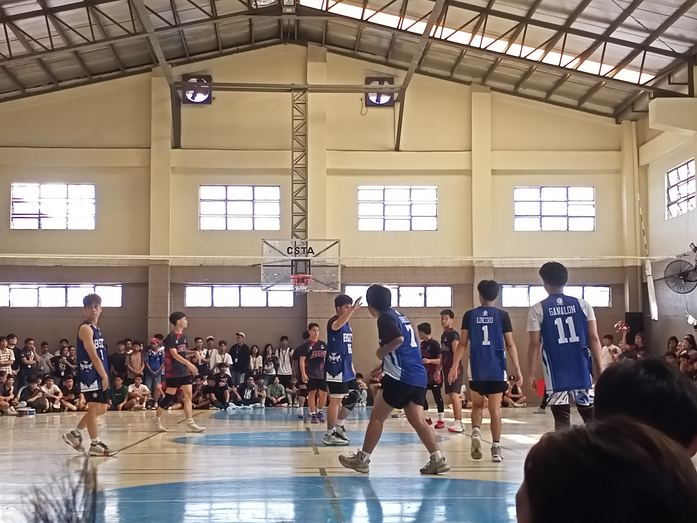
It was a big event where most of the students would love,Course vs course some of the students watching the game to support them, some they hanging out on the hallways due to the heat Weather and cannot stand by at the gym room full of students, here i pictured some events that i watched and participate the events, the first day was exhaustion for a longer walk marathon, there were cheerleaders and mascots. till the last day of sports fest, BSIT team were end up at 2nd place. It was fun event, my favorite thing to watch a game is vollyball.
There are times after the event, here comes the Mid term Exam, most of the subjects we passed and this project is not only i was alone on this project is other than Christian Carl, Albiso. the part i usually regret and it was quite very challenging to make this project done till submissioned to thurday, although it was late but it was worth to try to get pass the midterm. when there's another project to make, i told him that next time, we both should join our classmates for a group when there's something urgent to priotize with other things in life. there WAS nothing wrong with our friendship with carl,but he did some efforts to help ourselves for a project, we're grateful that some of our classmates approach us and guide where to buy components. it wasn't good situation with my family's behavior that time...
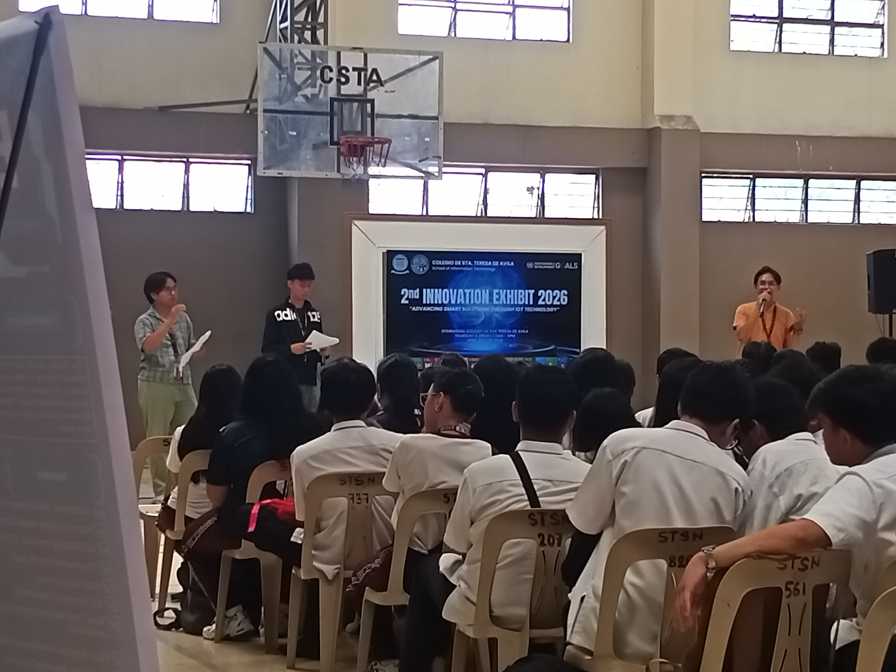
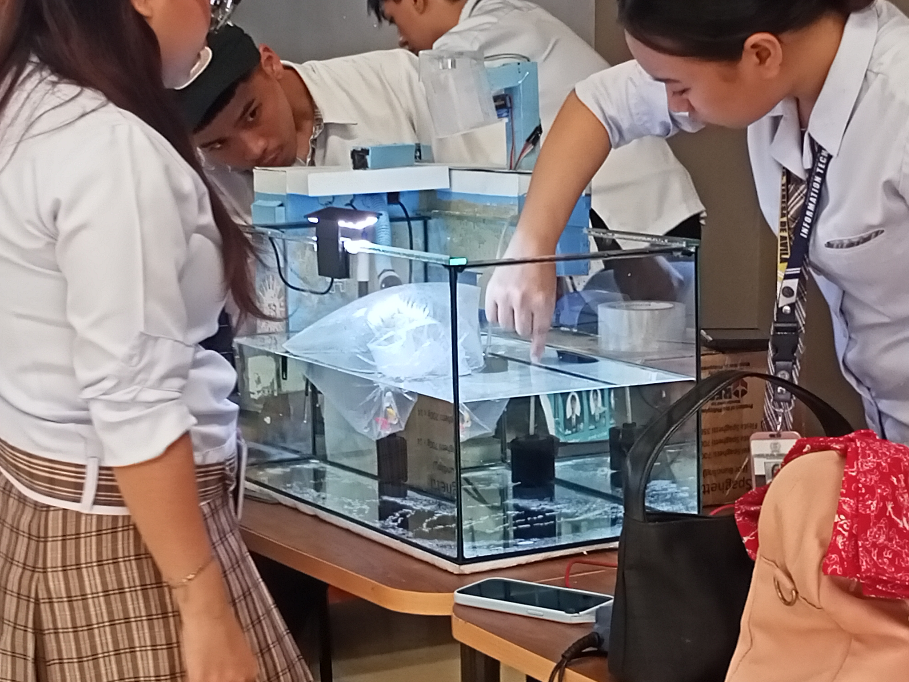
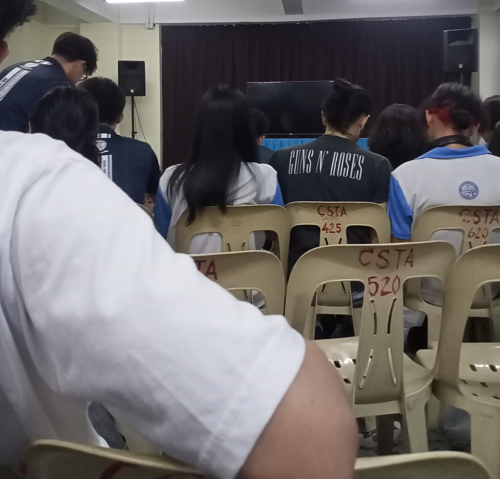
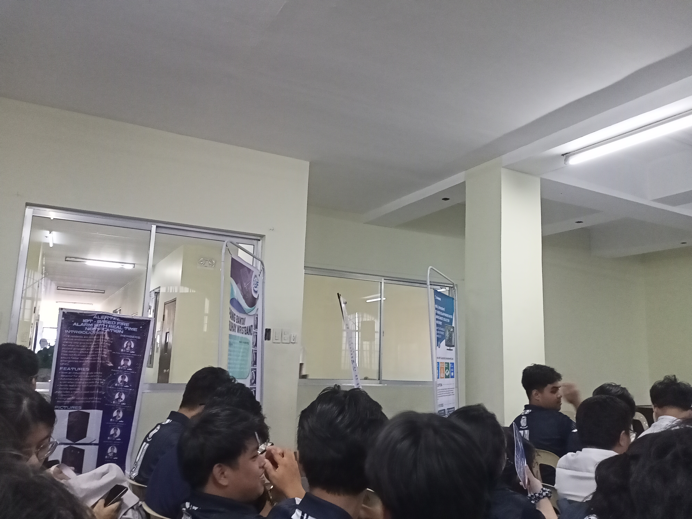
In the short event this month of april, where the weather gets hotter than before, albiso an i did provide money well for our groupmates for the project, things were geeting complicated and further i can help them to print the progress report but the the leader refused to do so, during the event rewards we won in the 3rd place and things got onto arguments from our groupmates why 4 of them didnt provide money before the project to finish?....ah..of course..they used our money for other things than buying the components for the project. this i something i hated about theier actions what they did, it was unacceptable and frustrating...
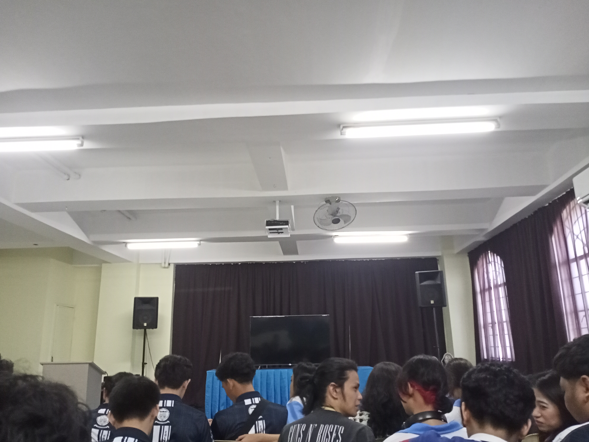
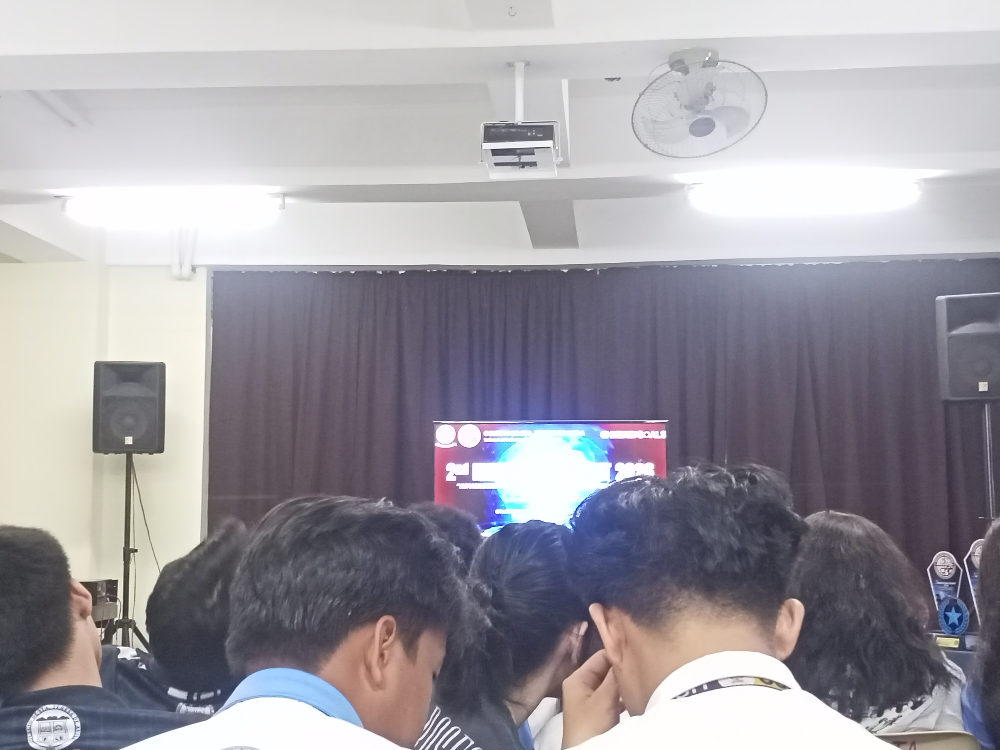
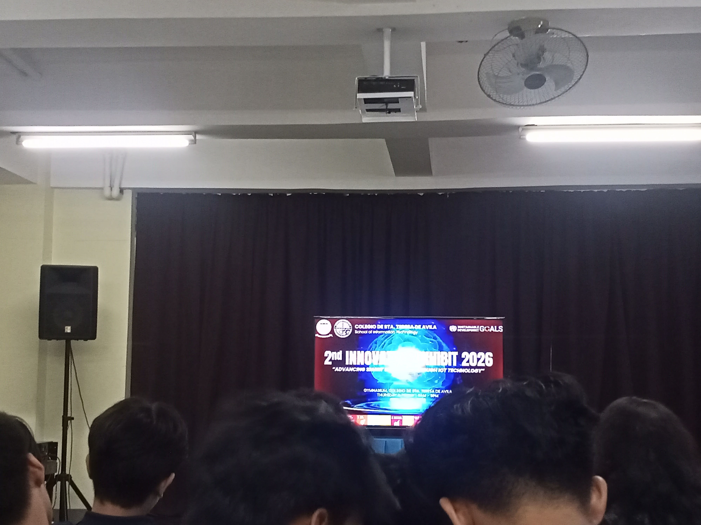
After that situation, we got our money left and the rewards halfed done, yet still wasnt satified what they did and my parents told our dean that these 4 people on my groupmates will never be our same classmates after the fraud they did, i finished the art commissionfor my client and recieved the payment for the feildtrip and the midterm exam fee. this will be my last diary log on this webpage and make one of my own on my free time
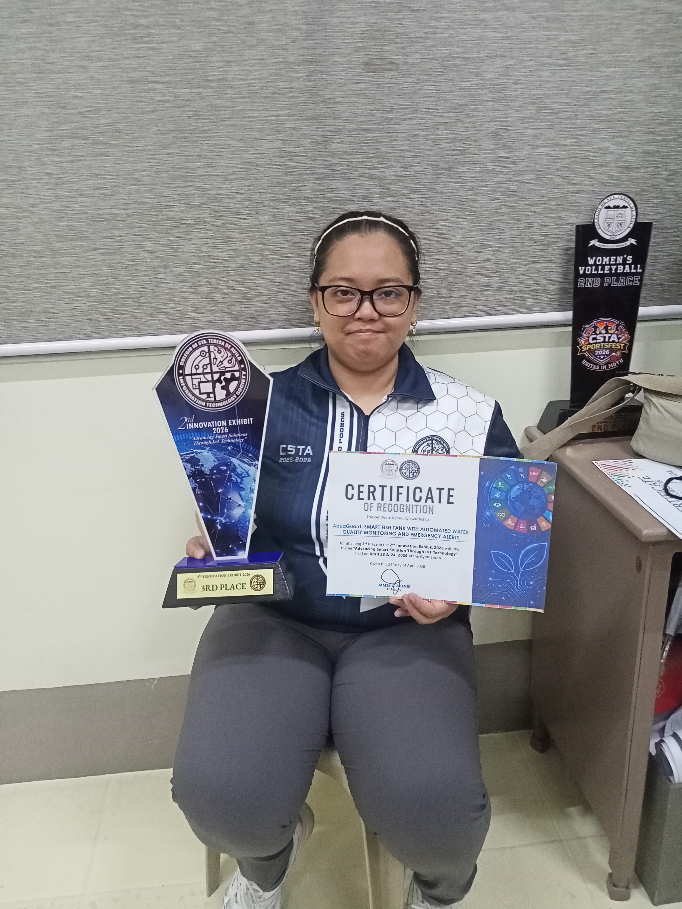
See you in 3rd Semester, Happy Summer! :]